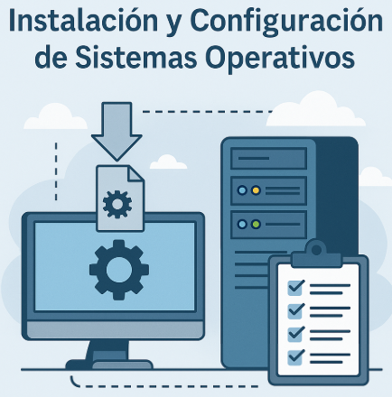

💽 Unidad Didáctica 3 — Instalación y Configuración de Sistemas Operativos¶

⏱️ Temporalización global¶
- Duración: 30 h (18 sesiones) / 160 h
- Lunes: 2 h · Martes: 2 h · Miércoles: 1 h
- Bloque: Sistemas Operativos y Gestión de la Información
- Secuencia anual: UT 3 / 6
Meta · Planificar, instalar y configurar sistemas operativos libres y propietarios, aplicando buenas prácticas de seguridad, documentación y sostenibilidad.
🎯 ¿Qué vas a aprender?¶
- Diferencias, licencias y arquitecturas de los SO actuales.
- Virtualización y gestores de arranque.
- Instalación paso a paso (Windows 11, Debian 12).
- Configuración inicial: controladores, actualizaciones y herramientas básicas.
- Documentación técnica del proceso.
🔎 ¿Qué haremos?¶
- Instalaciones reales y en VirtualBox/Hyper-V.
- Comparativa de licencias y requisitos hardware.
- Script de post-instalación automatizado.
- Proyecto exprés: “SO listo en 30 min” documentado en portafolio.
🎯 Criterios de evaluación y Resultados de aprendizaje¶
- CE 9. Identifica elementos funcionales y selecciona SO apropiado.
- CE 10. Analiza características, funciones y arquitectura.
- CE 11. Compara distintos SO según requisitos y licencias.
- CE 12. Planifica e implementa el proceso de instalación.
- CE 13-14. Realiza instalación y actualización completa.
- CE 15. Utiliza tecnologías de virtualización.
- CE 16-17. Instala aplicaciones y documenta procedimientos.
- CE 18. Elige sistema de archivos adecuado al caso.
- CE 21. Crea particiones y unidades lógicas.
- CE 22. Realiza y restaura copias de seguridad básicas.
- CE 55, 58, 61, 64. Trabajo en equipo, aprendizaje autónomo, ciberseguridad, sostenibilidad.
📑 Competencias profesionales y para la empleabilidad¶
- a) Configurar y explotar sistemas informáticos.
- b) Aplicar técnicas y procedimientos de seguridad.
- o) Elaborar y mantener documentación técnica.
- q) Resolver contingencias con iniciativa y autonomía.
📏 ¿Cómo se evalúa?¶
- Prácticas guiadas de instalación (Windows / Linux / VM).
- Cuestionarios en AULES sobre arquitectura y licencias.
- Portafolio digital con capturas y script post-instalación.
- Proyecto exprés + defensa en vídeo 5’.
🗂️ Planificación por actividades¶
| # | Tipo | Actividad | RA / RAT · CE | Ses. | H |
|---|---|---|---|---|---|
| 1 | Intro | Kahoot “¿Qué SO y por qué?” | RA2 · RAT2 → CE 9, 11, 58 | 1 | 1 |
| 2 | Intro | Licencias: GPL vs EULA (debate) | RA2 · RAT3 → CE 11, 61 | 2 | 2 |
| 3 | Intro | Taller de virtualización básica (VM + ISO) | RA2 → CE 15 | 3 | 2 |
| 4 | Des. | Instalación Windows 11 paso a paso | RA2 → CE 12-14 | 4-5 | 3 |
| 5 | Des. | Instalación Debian 12 + particionado manual | RA2 · RA3 → CE 12-14, 18, 21 | 6-7 | 3 |
| 6 | Des. | Post-instalación: controladores y actualizaciones | RA2 → CE 14 | 8 | 2 |
| 7 | Des. | Script bash/powershell de tareas típicas | RA2 · RAT2 → CE 16-17, 58 | 9-10 | 3 |
| 8 | Des. | Snapshot, copia de seguridad y restauración | RA3 → CE 22 | 11 | 2 |
| 9 | Compl. | Comparativa de consumo y sostenibilidad | RAT4 → CE 64 | 12 | 1 |
| 10 | Des. | Documenta tu instalación (Markdown + screenshots) | RA2 · RAT1 → CE 17, 55 | 13-14 | 3 |
| 11 | Ap. | Proyecto “SO listo en 30 min” (equipo) | RA2-3 · RAT1-4 → CE 9-17, 18-22, 55, 58, 61, 64 | 15-17 | 4 |
| 12 | Eval. | Test + checklist PRL + defensa proyecto | RA2-3 · RAT1-4 | 18 | 2 |
Las sesiones y horas son orientativas; pueden ajustarse según progreso.
1. Introducción¶
Los sistemas operativos constituyen la capa de software que permite dialogar hardware y aplicaciones. En esta unidad profundizarás en su arquitectura, licenciamiento y en el proceso completo de instalación —real y virtual—, documentando cada paso con buenas prácticas de seguridad y sostenibilidad.
2. Objetivos didácticos¶
- Comprender el funcionamiento y la estructura de un sistema operativo.
- Comparar familias de SO según arquitectura, licencia y requisitos.
- Reconocer los aspectos legales y la documentación necesaria antes de instalar SO libres y propietarios.
- Planificar e implementar instalaciones en hardware real y máquinas virtuales.
- Gestionar controladores y actualizaciones tras la instalación.
- Documentar el proceso siguiendo estándares profesionales y buenas prácticas PRL.
3. Contenidos¶
- Estructura de un sistema informático.
- Sistemas operativos: características, arquitectura y funciones.
- Tipos y clasificación de sistemas operativos.
- Gestores de arranque y arranque dual.
- Virtualización y máquinas virtuales (VirtualBox / Hyper-V).
- Consideraciones previas: requisitos, versiones y licencias (GPL, EULA).
- Instalación paso a paso (Windows 11, Debian 12).
- Configuración inicial: controladores, actualizaciones y ficheros de inicio.
- Documentación y buenas prácticas de post-instalación.
4. Actividades y secuenciación¶
Fase 1: Introducción y motivación (Sesiones 1 a 3)¶
💡 Sesión 1: ¿Por qué tantos sistemas operativos?¶
- Actividad: Quiz interactivo en Kahoot y lluvia de ideas sobre casos de uso.
- Implementación:
- Kahoot de 10 preguntas para detectar conocimientos previos.
- Lluvia de ideas en Padlet sobre experiencias con distintos SO.
- Clasificamos ejemplos por licencia y dispositivo.
- Criterios: 9, 11, 58 · Instrumentos: Kahoot, observación directa.
📜 Sesión 2: Licencias y modelos de negocio¶
- Actividad: Debate estructurado GPL vs EULA; conclusión en Padlet.
- Implementación:
- Lectura guiada de fragmentos de licencias.
- Grupos pro-software libre vs pro-propietario.
- Exposición final y matriz comparativa.
- Criterios: 11, 61 · Instrumentos: Rúbrica de debate.
🖥️ Sesión 3: Virtualiza tu primer sistema¶
- Actividad: Crear y arrancar una VM con ISO Ubuntu Server 24.04.
- Implementación:
- Instalamos VirtualBox.
- Configuramos VM (RAM, disco, red bridged).
- Arrancamos ISO y comprobamos instalador.
- Criterios: 15 · Instrumentos: Checklist de VM, captura en portafolio.
Fase 2: Desarrollo (Sesiones 4 a 14)¶
🪟 Sesión 4-5: Instalación guiada de Windows 11¶
- Actividad: Instalación completa en hardware real / VM, incluyendo partición y cuenta local.
- Implementación:
- USB bootable con Media Creation Tool.
- Particionado GPT y BitLocker opcional.
- Primer arranque, actualizaciones y drivers.
- Criterios: 12-14 · Instrumentos: Rúbrica de instalación, fotos.
🐧 Sesión 6-7: Instalación de Debian 12¶
- Actividad: Instalación con particionado LVM y sistema de archivos ext4.
- Implementación:
- Configuramos 3 particiones:
/,/home, swap. - Instalamos entorno GNOME mínimo.
- Primer login y actualización
apt. - Criterios: 12-14, 18, 21 · Instrumentos: Rúbrica, portafolio.
🔄 Sesión 8: Post-instalación y actualizaciones¶
- Actividad: Instalamos controladores, actualizamos y creamos punto de restauración/snapshot.
- Criterios: 14 · Instrumentos: Checklist, captura de versión SO.
⚙️ Sesión 9-10: Script de automatización¶
- Actividad: Crear script bash/powershell que instale aplicaciones y configure opciones básicas.
- Criterios: 16-17, 58 · Instrumentos: Repositorio Git, rúbrica.
🛡️ Sesión 11: Copia de seguridad y restore¶
- Actividad: Configurar
rsync+cronen Linux o Historial de archivos en Windows. - Criterios: 22 · Instrumentos: Informe técnico.
♻️ Sesión 12: Consumo energético y sostenibilidad¶
- Actividad: Estimamos el consumo y analizamos impacto ambiental.
- Criterios: 64 · Instrumentos: Ficha de cálculo kWh.
📝 Sesión 13-14: Documenta tu instalación¶
- Actividad: Completar plantilla Markdown en GitHub Pages con capturas y justificaciones.
- Criterios: 17, 55 · Instrumentos: Revisión de portafolio.
Fase 3: Aplicación y evaluación (Sesiones 15 a 18)¶
🚀 Sesiones 15-17: Proyecto “SO listo en 30 min”¶
- Actividad: Equipos de 4 diseñan y ejecutan una instalación optimizada (Windows o Linux) en tiempo límite.
- Implementación:
- Planificación y roles.
- Instalación cronometrada.
- Pruebas de arranque, red y snapshot final.
- Criterios: 9-17, 18-22, 55, 58, 61, 64 · Instrumentos: Rúbrica de proyecto, vídeo demo.
📝 Sesión 18: Evaluación final y reflexión¶
- Actividad: Test teórico en AULES, checklist PRL y defensa breve del proyecto.
- Criterios: 9-17, 18-22 · Instrumentos: Test autocorregible, rúbrica de defensa, autoevaluación.
🤝 Atención a la diversidad¶
Adaptaciones previstas
- Apoyo visual: capturas paso a paso y vídeos subtitulados.
- Prácticas escaladas: posibilidad de usar ISO “live” sin instalación para alumnado con ritmo más lento.
- Extensión de plazos: ampliación en documentación para NEE reconocidas.
5. Instrumentos de evaluación¶
| Instrumento | Evidencias | Sesiones |
|---|---|---|
| Observación directa | Participación, PRL, roles | Todas |
| Rúbricas de instalación | Capturas, checklist, tiempos | 4-7 |
| Cuestionarios AULES | Arquitectura, licencias | 1, 8, 18 |
| Portafolio digital | Markdown + screenshots | 3-14 |
| Rúbrica de scripts | Código en Git, README | 9-10 |
| Rúbrica de proyecto | Tiempo, funcionalidad, seguridad | 15-17 |
| Auto/co-evaluación | Reflexión, feedback | 12, 18 |
🛠️ Ejemplos¶
✅ Checklist PRL · Instalación física/VM¶
| Ítem de seguridad | Sí | No | N/A |
|---|---|---|---|
| ESD: uso de pulsera/tapete antiestático | □ | □ | □ |
| Orden y limpieza del espacio de trabajo | □ | □ | □ |
| Cables y herramientas correctamente organizados | □ | □ | □ |
| Desconexión de la fuente de alimentación antes de abrir el equipo | □ | □ | □ |
| Verificación de BIOS/UEFI segura (Secure Boot) | □ | □ | □ |
| Registro de incidencias en parte de taller | □ | □ | □ |
🗂️ Rúbrica · Instalación Windows 11¶
| Criterio | Excelente (9-10) | Notable (7-8) | Aprobado (5-6) | Insuficiente (<5) |
|---|---|---|---|---|
| Planificación y particionado | GPT correcta, BitLocker documentado | GPT correcta | GPT con errores menores | Particiones incorrectas |
| Proceso de instalación | Sin errores, < 25 min | < 35 min | < 45 min | Fallos recurrentes |
| Configuración de drivers | Todos firmados y actualizados | 1 driver pendiente | 2 drivers pendientes | > 2 drivers sin instalar |
| Post-instalación | Pasos 100 % + snapshot | ≥ 80 % de pasos | ≥ 60 % de pasos | < 60 % de pasos |
| Evidencias en portafolio | Capturas + log completo | Capturas sin log | Log incompleto | Sin evidencias |
⚙️ Rúbrica · Script Bash / PowerShell¶
| Dimensión | Excelente (9-10) | Notable (7-8) | Aprobado (5-6) | Insuficiente (<5) |
|---|---|---|---|---|
| Funcionalidad | Automatiza ≥ 6 tareas críticas sin errores | 4-5 tareas, sin errores graves | 2-3 tareas, algún aviso | ≤ 1 tarea o errores graves |
| Legibilidad y comentarios | Código estructurado, comentarios claros | Comentarios parciales | Pocos comentarios | Sin comentarios |
| Gestión de errores | Manejo exhaustivo (try/catch, validaciones) |
Controla 1-2 errores | Control mínimo | Sin control |
| Portabilidad | Parámetros, sin rutas fijas | 1-2 rutas fijas | Varias rutas fijas | No portable |
| Documentación (README) | Uso, requisitos, ejemplos, licencia | Uso + requisitos | Solo uso | Sin README |
🚀 Rúbrica · Proyecto “SO listo en 30 min”¶
| Área | Peso | Excelente (9-10) | Notable (7-8) | Aprobado (5-6) | Insuficiente (<5) |
|---|---|---|---|---|---|
| Tiempo total | 20 % | ≤ 30 min | 31-35 min | 36-40 min | > 40 min |
| Funcionalidad global | 100 % operativo (arranque, red, snapshot) | 1 fallo menor | 2 fallos | > 2 fallos | |
| Script auto-post | Ejecuta sin errores, log limpio | 1 aviso | 2 avisos | Error crítico | |
| Sostenibilidad (consumo) | ≤ 55 W medio | ≤ 65 W | ≤ 75 W | > 75 W | |
| Documentación | Markdown + vídeo + capturas | Markdown completo | Markdown parcial | Sin documentación |
📂 Portafolio digital · Lista de cotejo¶
- [ ] Carpeta
ud3/creada en OneDrive clase - [ ] Capturas numeradas del instalador (≥ 8)
- [ ] Archivo
postinstall-script.*commit en Git - [ ] Fichero
README.mdcon tabla de versiones - [ ] Vídeo demostración ≤ 3 min enlazado
🎯 Cuestionario AULES · Arquitectura y licencias¶
(Banco de 25 ítems autocorregibles; muestra de ítems de ejemplo)
1. ¿Qué capa del SO gestiona los hilos de ejecución?
a) Shell b) Kernel c) BIOS d) HAL
2. Relaciona GNU GPL, BSD y EULA con su descripción.
3. Respuesta breve: Ventajas de Secure Boot en entornos empresariales.
4. Arrastra y suelta: Ordena las fases de arranque UEFI.
5. Pregunta hotspot: Identifica en la imagen la partición EFI.
¡Sistemas instalados, listos para administrarlos! 🛠️